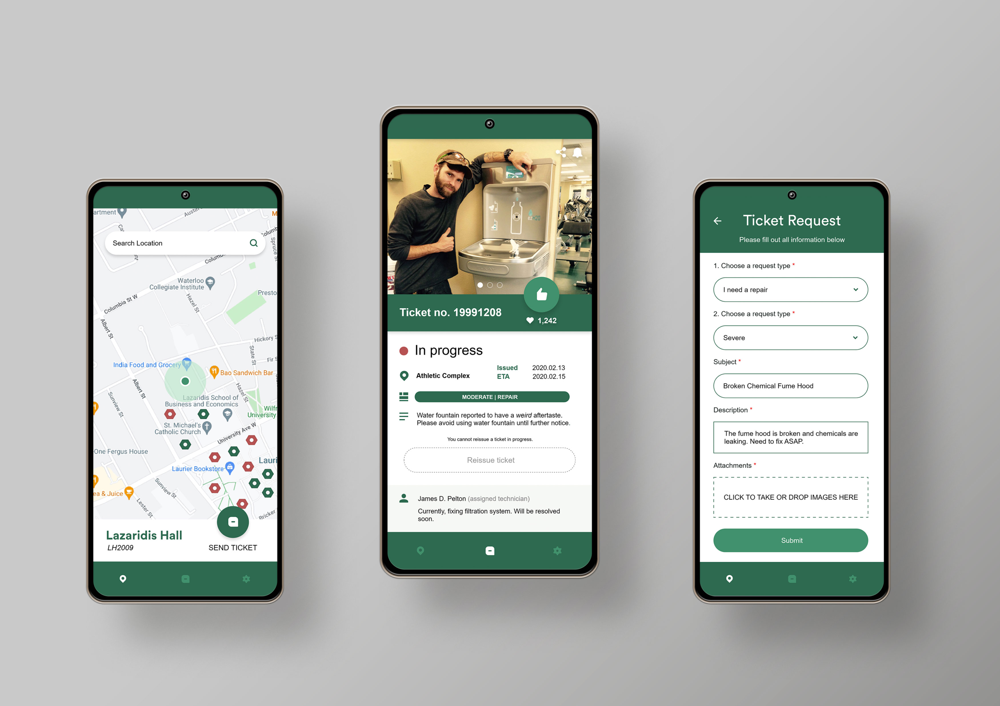

The task
Your school wants to improve the upkeep of campus facilities by creating a new system for reporting any facilities that may need maintenance or repair. Design an experience that allows students to report building or equipment issues on campus. Consider the process of those filing the report and of those receiving and taking action on the issues.

The start of my journey
When first approaching this exercise, I thought it would be a good idea to organize my thoughts and ideas while tackling this problem. I researched the current maintenance and repair system for universities and realized that the tactics used eons ago are still used now. That most popular tactic being you, the student, calling in and reporting the issue to administrative staff. Afterward, you simply wait with no feedback whatsoever. FYI, the wait is VERY long.

So, what is the problem?
I realized the only way for you to measure the success of your report was to simply wait and see if what you wanted fixed or maintained hopefully happened. Clearly, this was not an effective way to update users reporting the tickets. I questioned why that was the case and that helped me discover additional pain points that I have outlined below. Moreover, I have also started adding in the type of UI I wanted to incorporate and what google products to integrate.
Filtrations
- Maintenance or repair
- Building or equipment
- Scale - minor to severe
- Location
- Reoccurring or new
- Indication for reoccurrence
Pain points
- Slow ticket process
- Reoccuring damages require another ticket
- Duplicated tickets slow queue
- Feedback of ticket can only be measured by whether or not the issue has been resolved
- Lack of visuals to exactly pinpoint what people want to be fixed or maintained
Google Integrations
- Google Firebase for storing data and securing user information
- Google maps to pinpoint locations for repair and maintenance
- Google Now for notifications
- Google Search Engine for local repair and maintenance companies
Primary UI Students
- Ticket submission button - damage report
- Google Maps API
- Pinpoint Color - in progress or completed
- Last updated - repair or maintenance completion date or start date (Domino’s Pizza Meter style)
- Notifications - reviewed, complete!
- Upvoting or comment section
Primary UI Admins
- Ticket review button
- Google Maps API
- Pinpoint Color - in progress or completed
- List of all tickets in different categories depending on filters: completed, ongoing, new w/ scale, reoccurred, most popular, date
- Notifications - Reviewed
- Upvoting or comment section
Secondary UI Both
- Share to social media
- Contact or email support
- Profile Settings
How do I fix this?
From my brainstorm of thoughts and ideas, I summarized the pain points I wanted to focus on into three distinct goals that I would like to achieve.
The goals being:
- Alleviate inefficient and time-consuming ticket queues
- Minimize repetitive tickets to reduce queue overload
- Continuously update users and admins on repairs and maintenances while keeping them clear and concise
Who needs Sketch?
With the research I put in and the requirements I set out for myself, I was ready to begin. I made sure to stick closely to the three goals I set out for myself to accomplish. Initially, I wanted to design my low fidelity design using Sketch, however, I own a PC, so it was unavailable (sad violin music). Being the undeterred person as I am, my next best solution was Adobe Illustrator which was painstakingly long but gave me the results I was looking for as you can see below.

For navigation, I opted for 3 selective views: pinpoint map, ticket submission - students | ticket reviews - admins, simple user settings
Besides the ticket submission tab, I kept the other tabs as close as possible to each other because I felt that both parties should have the same easy experience. Also, implementation can be quite painful when it feels like there are two apps in one.
For filing and receiving the report, I tried to make the fill out form straightforward and clear as possible to cover all various incidents of repair and maintenance. I also request users to attach images because in my experience, visuals are always helpful in understanding a problem.
Now we move onto the meat and potatoes of user flow:
Onboarding

The login screen is very simple and has a picture of our logo (mend) on it. I went for a basic design because I don’t want to scare users into believing that the app is difficult to use.
Moving on, I created an easy signup page that can help differentiate between the students and administrators by asking who they are and to input their ID. I asked for their ID in order to deter students from falsifying their identities and making fake tickets since they can be immediately identified by administration.
Firebase will verify and approve of all credentials during signup while the user is being shown a nice loading animation before being taken to the map interface. If there is something invalid, they will be redirected back to the signup page.
Exploration

We’ll start off with the Student UI first. Students are introduced to a map that displays their current location and allows them to search a location of which a repair or maintenance is required.
The pinpoints on the map represent the tickets for areas on campus. These pinpoints will represent two colors (red being In Progress, green meaning completed) to indicate the status of the ticket and to visualize issues that have been resolved.
Students can also click on these pinpoints to view the information regarding the ticket and other details including the expected date of repair (if in progress), severity and so on.
Moreover, a button is available next to their location on the map to make it straightforward for students to file a report. Once a report has been submitted, they are directed to a confirmation that their ticket has been submitted and directed back to the map. If their ticket has been accepted for repair or maintenance, it will be notified to the issuer and anyone who clicked the bell icon when viewing the ticket.

In terms of differences in Administration UI, we’re mainly focusing on the ticket tab. For the map, instead of a submission ticket button, they are given a review ticket button to make it more apparent. When clicked, they will be shown all tickets which can be organized accordingly using the filters.
The filters are there to keep things organized and alleviate the stress of having a bombardment of tickets. Administrators swipe left on a ticket to reveal a delete or update option. Administrators can delete tickets that are the same to another or is ineligible. The update button is for updating the status of tickets from In Progress to Complete. It can also be used vice versa for maintenance purposes where it is continuous.
Administrators can choose to resolve a ticket and can edit the information of the student’s ticket before publishing it on the map for viewing. Sometimes students can be inaccurate about a problem or give an unacceptable description of the incident which is why I allowed for administrators to edit the information before it goes public.
Also, if administrators have trouble finding a company to take care of the issue, I opted for administrators to use the google search engine to assist them.

I wanted to discuss this exclusively because it is my favorite one out of all the panels. Previously, I mentioned that when a user clicks on a pinpoint, they are introduced to all details regarding a ticket.
Below there is a secondary ticket option that will become available for when an issue is resolved but reoccurs. It will redirect users to the ticket submission which is nothing new but to administrators, they can recognize that this ticket is a reoccurrence.
Now if you look closely you will see this huge thumbs up button which is for students’ purposes only, but administrators can upvote too. It is created for students to indirectly communicate to administrators about an issue that may be minor to them but very important to students.
Say, for example, water from a fountain at the gym tastes really weird. It is a minor issue but heavily affects a lot of students so by upvoting, you are telling administrators that this issue needs to be fixed now.
Furthermore, there are icons on the top right. There is a sharing icon so students and administrators can take to social media to share with others. The bell icon is for students to receive notifications of when a ticket is being resolved and is completed.
High Fidelity
I have chosen three specific panels to do a high-fidelity design on because I believe it can communicate the app thoroughly and can address the necessary look and feel of the app. Below you can see I opted the app to be the color of green because it is a sign of health and positivity. I think it works well with repairs and maintenance because you’re restoring things back to their original state of higher quality.

The Map
For the map, you can see the pinpoints of the color orangey red and green which I mentioned before, represents the status of the issue. I wanted the map to be a light color to easily find the pinpoints on the map as well as make it easier on the eyes. The map itself is movable by swiping around and can be zoomed out or in by pinching the screen outward and inward.The Ticket
The most boring yet important one is the ticket which displays all core information for a report to be filed and resolved. Everything is clearly outlined for users to comprehend and allows users to fill out all necessary information quickly and effectively.The Pinpoint Details
The pinpoint details display pictures of what the current issue is at hand and can help to visualize the issue more clearly. All basic details are highlighted below the images and if users cannot depict the issue through visuals, there is a description below for them to read. The goal is to inform other students about this issue and jog the memories of administrators if they ever forget what the problem looks like.The final countdown but what's next?
Overall, I believe my application alleviates and minimizes the problem of modern educational reporting systems experience. I definitely believe it can be made more effective and should focus more on the communication aspect since it can still be lost in the reporting queue.If I had more time to execute this application, I would focus on integrating Google’s cloud storage to create a database that stores all tickets that were completed. This can reduce repetitive tickets even further and give administrators better control and information over the problems that students experience in campus facilities.
An even cooler idea for the future of the future is to use Google’s A.I. capabilities to instantly assess an issue through visuals and descriptions to have it write an instant report that is automatically sent to administrators for fixing.
But of course, these ideas take a lot of time and thought before it can be executed to perfection. As the saying goes for my app, you can only mend things one step at a time.